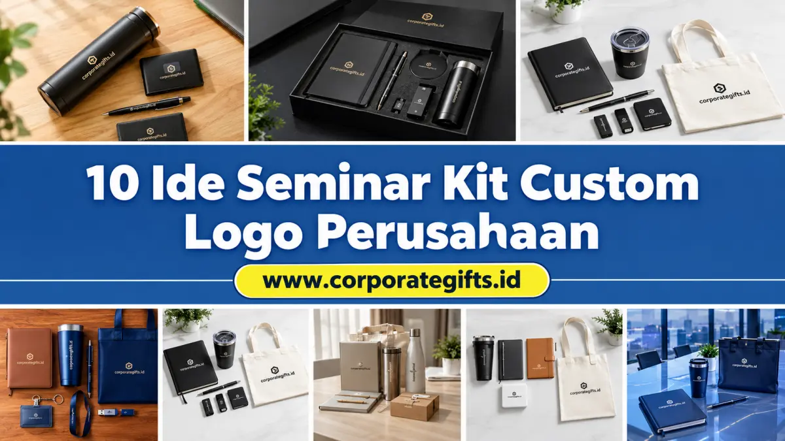

Corporate Gifts ID - Seminar kit custom logo perusahaan adalah paket merchandise event yang dipersonalisasi dengan identitas visual merek agar peserta merasa diapresiasi sekaligus memperluas jangkauan promosi korporat secara jangka panjang.
Dalam penyelenggaraan konferensi, simposium, workshop nasional, maupun rapat kerja internal, seminar kit bukan sekadar perlengkapan pelengkap. Paket cinderamata ini berfungsi sebagai jembatan komunikasi brand yang nyata di tangan audiens.
Poin Kunci Keunggulan Seminar Kit Custom:
- Personal Branding Berkelanjutan: Logo pada produk yang berguna sehari-hari menciptakan ingatan merek (brand recall) yang tahan lama.
- Meningkatkan Nilai Profesionalisme Acara: Memberikan kesan eksklusif dan kesiapan matang dari pihak panitia penyelenggara.
- Fleksibilitas Konsep: Dapat disesuaikan dengan berbagai tema, mulai dari konsep ramah lingkungan (eco-friendly), teknologi pintar, hingga edisi terbatas (limited edition).
- Efisiensi Anggaran: Strategi mix and match antara item esensial dan item premium membantu menjaga anggaran tetap efisien.
Kenapa Perlu Seminar Kit Custom dengan Logo Perusahaan?
Mengintegrasikan logo dan warna korporat ke dalam paket seminar kit memberikan dampak positif yang nyata bagi reputasi penyelenggara:
- Branding yang Lebih Personal: Identitas brand hadir langsung dalam genggaman peserta. Setiap kali buku catatan dibuka atau tumbler digunakan di meja kerja, nama perusahaan akan selalu diingat.
- Meningkatkan Nilai Profesional Event: Paket merchandise yang dikemas seragam dan berkualitas memperlihatkan dedikasi institusi dalam memberikan pengalaman terbaik bagi peserta.
- Media Promosi Jangka Panjang: Produk seperti tas jinjing, tumbler vakum, atau kabel data digunakan berulang kali di ruang publik, menciptakan eksposur gratis berkelanjutan.
10 Ide Kreatif Seminar Kit Custom Logo Perusahaan
Berikut daftar 10 inspirasi paket seminar kit yang dapat Anda pilih dan kombinasikan sesuai tema acara serta profil audiens:

Variasi produk seminar kit custom mulai dari tumbler ramah lingkungan hingga perangkat kerja modern.
1. Seminar Kit Ramah Lingkungan (Eco-Friendly)
Menggunakan material berkelanjutan seperti tote bag kanvas blacu, tumbler tutup bambu alami, dan notebook bersampul kraft daur ulang. Pilihan ini memperkuat citra kepedulian lingkungan (ESG) perusahaan.
2. Seminar Kit Berbasis Teknologi
Dilengkapi perangkat praktis seperti flashdisk kartu custom full print, powerbank slim, kabel data 3-in-1, atau wireless charging pad. Sangat cocok untuk seminar IT, teknologi, dan audiens profesional muda.
3. Seminar Kit Fashion & Lifestyle
Menghadirkan item gaya hidup yang modis seperti lanyard motif tenun custom, pouch serbaguna, kaos polo katun combed, atau topi snapback berlogo minimalis.
4. Seminar Kit Edukatif & Akademik
Berfokus pada instrumen pencatatan materi, seperti binder jilid kulit refillable, pulpen metal gel dengan cetak grafir, modul materi berdesain elegan, dan sticky notes warna korporat.
5. Seminar Kit Hidrasi & Aktivitas Harian
Kombinasi botol minum stainless vacuum flask SUS 304, mug keramik matte, dan sedotan stainless dalam kantong pouch ramah lingkungan.
6. Seminar Kit Premium VIP
Ditujukan bagi narasumber, tamu kehormatan, atau peserta kelas eksekutif. Terdiri atas tas ransel laptop branded, executive pen berkotak kayu, dan kartu e-money custom berdesain eksklusif.
7. Seminar Kit Hybrid & Digital Access
Mengintegrasikan merchandise fisik dengan kartu QR Code cerdas yang terhubung ke modul digital, rekaman materi event, dan sertifikat elektronik peserta.
8. Seminar Kit Fleksibel (Mix & Match)
Menggabungkan item dasar bernilai ekonomis (blocknote spiral dan pulpen promosi) dengan satu produk bernilai tinggi (seperti tumbler vacuum flask) agar tetap hemat namun berkesan.
9. Seminar Kit Edisi Terbatas (Limited Edition)
Merchandise berdesain artistik khusus yang hanya diproduksi pada perayaan milestone atau konferensi akbar tertentu, sehingga menciptakan nilai koleksi yang tinggi.
10. Seminar Kit Tematik Sektoral
Isi paket disesuaikan langsung dengan sektor industri acara. Misalnya, seminar kesehatan berisi hand sanitizer custom, termometer digital, dan tumbler higienis; sedangkan seminar bisnis berisi kalkulator meja dan buku agenda manajerial.
Tabel Perbandingan Ide Paket Seminar Kit & Estimasi Biaya
Berikut rangkuman komparasi paket seminar kit berdasarkan kategori produk, target acara, dan kisaran estimasi biaya per paket:
| Kategori Seminar Kit | Komposisi Item Utama | Target Audiens / Event | Estimasi Kisaran Biaya |
|---|---|---|---|
| Paket Ramah Lingkungan | Tote bag blacu, Tumbler bambu, Pulpen kertas kraft | Seminar ESG, Workshop Lingkungan, Komunitas | Rp35.000 - Rp75.000 / paket |
| Paket Teknologi Modern | Flashdisk kartu, Kabel 3-in-1, Mousepad, Pouch | Konferensi IT, Fintech Summit, Pelatihan Digital | Rp65.000 - Rp130.000 / paket |
| Paket Edukatif Standar | Blocknote spiral A5, Pulpen cetak logo, Map folder | Pelatihan Internal, Simposium Kampus, Diklat | Rp20.000 - Rp45.000 / paket |
| Paket Eksekutif VIP | Agenda kulit PU, Pen metal grafir, Tumbler vacuum SUS 304 | Narasumber, Tamu Kehormatan, Rapat Kerja Direksi | Rp125.000 - Rp250.000 / paket |
Tren Seminar Kit Terkini: Sustainability & Teknologi
Perkembangan kebutuhan industri korporat mendorong dua tren utama dalam pengadaan seminar kit:
- Keberlanjutan Material (Sustainability): Penggunaan kemasan bebas plastik sekali pakai dan material daur ulang semakin menjadi prioritas bagi korporasi yang menerapkan prinsip green event.
- Integrasi Fungsional Sehari-hari: Peserta lebih menyukai cinderamata yang dapat terus digunakan untuk aktivitas kantor sehari-hari pasca kegiatan seminar selesai.
Tips Memilih Vendor Seminar Kit Custom yang Tepat
Untuk memastikan hasil produksi sesuai dengan ekspektasi dan tepat waktu, pertimbangkan kriteria berikut:
- Ketajaman dan Presisi Hasil Cetak: Pastikan vendor memiliki mesin cetak modern, baik sablon presisi, digital UV print, maupun laser engraving berakurasi tinggi.
- Portofolio dan Legalitas Usaha: Pilihlah mitra yang berbadan hukum resmi dengan pengalaman menangani ratusan instansi B2B serta dapat menerbitkan faktur pajak resmi.
- Layanan Sampel & Mockup Digital Gratis: Fasilitas visualisasi pra-produksi sangat membantu panitia memastikan penempatan logo sudah proporsional sebelum proses cetak massal.
Kesimpulan & Konsultasi Desain Gratis
Seminar kit yang dirancang dengan cermat dan memuat identitas logo perusahaan merupakan investasi branding jangka panjang yang sangat efektif.
Jelajahi beragam pilihan paket di Katalog Seminar Kit CorporateGifts.ID. Tim spesialis kami siap membantu Anda menyusun paket terbaik sesuai budget, membuat mockup visual instan, serta memberikan penawaran harga B2B resmi.